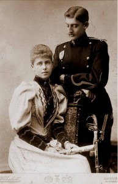
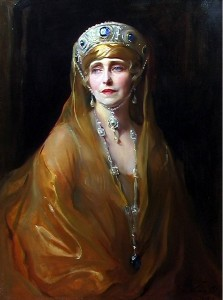
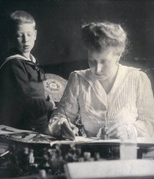

© Muzeul Național Peleș


 printați
printați
+40244 310 918 |
peles.ro@gmail.com |
Regina Maria
Maria de Edinburgh – Saxa – Coburg – Gotha, s-a născut la 29 octombrie 1875, la Eastwel Park, din comitatul Kent – Marea Britanie, ca fiica a ducelui Alfred de Edinburgh, al doilea fiu al reginei Victoria a Marii Britanii și a Marii Ducese Maria, unica fiica a țarului Alexandru II al Rusiei și a prințesei Maria de Hessen.
Educația primita de prințesa Maria este una cu adevărat regala. Iată cum o caracteriza un martor al adolescentei sale, citat de Nicolae Iorga: ,,credea în regi și în misiunile lor, dar și în drepturile lor. Nu era trufașă, dar nici umilă, ci regală din rădăcina parului pana la tălpile picioarelor, imperioasă, aprinsă, activă, fetița plină de bucuria vieții și de credință în rasa ei”.
Fire romantica și sensibila, Maria vibra în fata frumosului și a fost profund marcata de anii petrecuți în insula Malta, unde se afla reședința tatălui ei, amiral al flotei Marii Britanii, când ,,toate par o revelație și toate visurile, un adevăr”. Adora Malta, căci era plină de toată căldura strălucitoare a Sudului și totodată de tainele Răsăritului. Mereu deschisă tuturor impresiilor artistice, aceasta lume pietroasă va rămâne în amintirea Reginei ca o ,,minunata viziune păstrată cu evlavie în suflet” pană la sfârșitul zilelor sale.
în ianuarie 1893, principesa Maria sosește la București, în calitate de soție a principelui Ferdinand, moștenitorul coroanei României. în același an, Maria da naștere la castelul Peleș, primului copil, care a fost botezat Carol, în onoarea regelui Carol I.
în 1894, se naște tot la Peleș cel de-al doilea copil, o fetița botezata cu numele reginei Elisabeta. în 1921, s-a căsătorit George II, fiul regelui Constantin al Greciei, devenit la rândul lui suveran al Greciei la 27 septembrie 1922. Dupa numai 15 luni, în Grecia izbucnește o revoluție, iar George și Elisabeta se refugiază la București, unde divorțează. George se reîntoarce în Grecia, dar Elisabeta rămâne la București, pe care îl părăsește impreuna cu nepotul sau, Mihai, în ianuarie 1948. A murit la Cannes, în 1956.
|  | In 1900, la Gotha, în Germania, principesa moștenitoare aduce pe lume cel de-al treilea copil, prințesa Marioara, alintata Mignon. Ea s-a căsătorit, în 1922, cu regele Alexandru I al Serbiei, cu care a avut trei copii. Soțul ei va fi asasinat în 1934, la Marsilia, de teroriști croați. în 1941 Iugoslavia este ocupată de armata germana. Mignon a murit în 1961 și este înmormântată în mausoleul Frogmore din Windsor Park. |
în 1909, la Cotroceni, s-a născut Principesa Ileana, cea care va deveni arhiducesa de Austria, prin căsătoria ei cu Anton de Habsburg, cu care a avut șase copii. Ileana s-a înapoiat în Romania, după fuga lui Carol II și a înființat și condus în timpul celui de-al Doilea Război Mondial, pe domeniul Bran, pe care îl moștenise de la mama sa, un spital, „Inima Reginei Maria”. Cel de-al doilea soț al principesei Ileana a fost doctorul Stefan Isarescu. A plecat din tara în 1948, cu restul familiei. Dupa mai multe peregrinări prin Europa, Ileana impreuna cu copiii s-au stabilit în Statele Unite. Ulterior, Prințesa Ileana s-a călugărit, luând numele de Maica Alexandra și a înființat o mănăstire ortodoxa în Pennsylvania. A murit în 1991, după ce a avut bucuria de a-si revedea patria, în 1990.
Ultimul copil al Mariei, principele Mircea, născut în 1913, s-a stins în mod tragic, la numai 3 ani, de febra tifoida, în timpul Primului Război Mondial. Mormântul sau se afla la Castelul Bran.
Daca imediat după venirea sa în Romania, prințesei moștenitoare i se spunea ,,La Princesse Lointaine”, caci părea o planta încă neaclimatizata în pământul tarii, odată cu scurgerea timpului, Principesa Maria a ajuns sa cunoască mai bine decât cei din jurul ei Tara Românească. și nu numai în aparentele ei fermecătoare, dar, ceea ce putini ajung sa știe, în esența însăși a lucrurilor și a oamenilor. De aceea în momentele de restriște din timpul refugiului la Iași, când demnitatea de Regina și chiar viața ii erau amenințate a declarat: "alta patrie decât Romania nu am. De tara asta nu mă despart!”.
Întregul mod de viața al Reginei Maria poarta amprenta concepției sale despre regalitate. în acest concept se pot recunoaște tradiția anglo – saxona, în care fusese educata, îmbinată cu elemente celto – balto – scandinave, apropiate sufletului ei de ,,ultima romantica”, dar și ortodoxismul autohton al guvernării de tip monarhic. Punctul nodal în definirea regalității a fost, pentru Maria, caracterul sacru al acestei instituții. Vechiul concept anglo – saxon se identifica cu cel ortodox al Domnului, ca ,,uns” al lui Dumnezeu. Suveranul trebuia să fie, conform acestei teorii, un model de înțelepciune, răbdare și bunăvoința. El întruchipa măreția, puterea și solemnitatea instituției regale. Iată de ce crucea patriarhala, simbolul domniei sacre, apare în mod repetat printre elementele decorative ale Castelului Pelișor.
Conștienta de valoarea ei politica, nepoata falnicei regine Victoria a Angliei și a tarilor autocrați ai Rusiei (tari unde monarhia năștea respect spontan), a fost socata sa constate lipsa ei de autoritate ca prințesa moștenitoare și cat de cenzurata ii era puterea.
Daca ne amintim însă de îndelungata perioada din istoria Principatelor în care scaunul domnesc se vindea, de catre Poarta, celui ce oferea mai mult, înțelegem de ce sacrul nu mai făcea parte din concepția despre autoritate a poporului roman și de ce, așa cum spunea Maria, ,,bunăvoința și încrederea trebuiau câștigate cu străduința a și multe renunțări”. în plus, așa cum fusese consfințita prin Constituția din 1866, monarhia constituționala însemna o monarhie sub controlul tarii și implicit al opiniei publice. Aceasta opinie publica trebuia câștigata, si, pentru a realiza acest lucru, principesa Maria s-a călăuzit după principiul întâlnit la Curtea bunicii sale engleze: acela de a întreprinde lucruri interesante în general, și nu neapărat acte politice. Numai că, lucrurile interesante” nu erau îngăduite prințesei moștenitoare, obligata sa se conformeze unui protocol strict. Pentru a ieși din acest impas, imaginația Mariei a reînviat și actualizat tradiții medievale de Curte, pline de farmec și spectaculozitate, ce corespundeau ideilor nord – germanice despre regalitate, dar și concepțiilor autohtone, din veacul al XVII-lea. Fastul și ceremonialul de Curte dobândiseră, încă din epoca lui Constantin Brâncoveanu, un rol important pentru influențarea conștiințelor și sublinierea autorității domnești. |
 |
Iubitoare de frumos, Maria avea și o alta modalitate de afirmare a personalității – cea artistica. Creația ei literara cuprinde povestiri, evocări, romane, volume memorialistice. Vom cita doar câteva titluri: “Tara mea”, “Visătorul de vise”, “O legenda de la muntele Athos”, “Povestea unei domnite neascultătoare”, “Gânduri și icoane din vremea războiului”, “Dor nestins”, “Povestea unei inimi”, “Regine încoronate”, “Păsări fantastice pe albastrul cerului”, “Glasul de pe munte”, “Măști”, “Povestea vieții mele”. Lucrările literare au fost scrise în limba engleza și traduse în romana, câteva dintre traduceri aparținând-i lui Nicolae Iorga.
Scriptura, în traducerea din veacul al XVI-lea, care pare a fi o interpretare în stilul lui Spencer și Shakespeare, ii ajunsese atât de familiara, incat, în zilele tragice de înfrângere, la Iași, când nu putea vorbi altfel de durerile morale care o sfâșiau, Maria, Regina României, trimitea pentru a se tipări în românește, versete biblice, care cuprindeau tristețile, maniile și speranțele ei.
Ea însăși pictorița talentata, Regina Maria a fost creatoarea unei societăți artistice, ce a avut printre membrii fondatori pe Stefan Luchian și Stefan Popescu, intitulata ,,Tinerimea artistica”. Aceasta societate a inclus, printre membrii săi, artiști plastici de valoare ai perioadei interbelice: Kimon Loghi, Samuel Mutzner, Elena Popea, Marius Bunescu, Costin Petrescu, A. Verona, N. Vermont, A. A. Ionescu, Ipolit Strambu și alții.
|  | Înzestrata cu haruri artistice, dar și cu o remarcabila inteligenta, principesa Maria ajunge treptat la inima austerului rege Carol I. Iată cum descrie în ,,Memoriile” sale evoluția relației cu bătrânul rege: ,,Ca una care niciodată nu am avut plăcere pentru restricții, erau zile când o viața mai simpla s-ar fi potrivit mai bine cu gusturile mele. Cu cat înaintam însă în vârsta creștea răbdarea mea, ca și înțelegerea, și astfel m-am deprins sa prețuiesc valoarea acelor lucruri care adesea mă obosiseră la început. Am pătruns mai deplin în ceea ce interesa pe bătrânul cuminte; atâtea cunoștințe puteai sa câștigi de la experiența lui, si, daca judecata lui era uneori străină de felul meu mai aprins de a înțelege lucrurile, multe le-am învățat din vorbele lui, și încă mai multe din pilda ce mi-a dat-o. |
N-a fost niciodată un om mai auster, mai simplu, mai fără gând de sine, trăind pentru opera lui. Un sfânt n-ar fi trăit o viața de mai mare abnegație. Nu eram întotdeauna de aceeași părere, dar în fiecare an ne împrieteneam mai mult”.
Devenita suverana în septembrie 1914, Regina Maria s-a implicat în viața politica a tarii, cu tact și îndrăzneala. A avut un rol decisiv în făurirea României Mari, aflând-se în fruntea curentului filoantantist, ca un norocos sfătuitor al regelui Ferdinand.
în timpul refugiului la Iași, trăiește cu curaj calvarul războiului, fără a-si pierde nici o clipa credință în izbânda. ,,Mama râniților” impresiona prin energia inepuizabila și cutezanta dovedita mai ales în spitalele moldovene, înțesate de bolnavi de tifos exantematic. Mai târziu, va scrie în ,,Memoriile” sale: ,,multe zile am rămas în mijlocul soldaților mei și Dumnezeu mi-a îngăduit sa pot fi de vreun ajutor; zile de strașnica truda, zile de întuneric, când ce vedeam erau lucruri pe care niciodată nu voi mai putea sa le uit”.
în 1918, întoarsa din refugiu intra-un București bântuit de molime, Regina s-a contaminat si, pentru câteva zile, viața i-a fost în primejdie. Abia restabilita, ea pornea spre Parisul unde se hotăra soarta lumii, unde hotarele erau în discuție, într-o călătorie de apărare a dreptului romanesc.
Aleasa membra a Academiei de Arte Frumoase, aclamata de la cele dintâi cuvinte ca una din marile personalități ale epocii sale, Regina a câștigat o lume a cărei rezerva capitulează așa de greu și înaintea situațiilor și înaintea talentului. Cu orice prilej ea a ținut sa afirme ca Romania, fără a pretinde, nu cerșește. Ea reclama numai ce i se cuvine. ,,Nu suntem”, spunea ea, ,,ruda săraca”.
Ca o recunoaștere a meritelor sale deosebite în făurirea României Mari, la 1 decembrie 1920, Consiliul Orășenesc al Branului decide: ,,sa dăruim Maiestății Sale Regina Maria a României Mari străvechiul castel al Branului. Donațiunea sa fie înainte de toate o expresie a venerației sincere ce o simte și populația orașului nostru fata de marea Regina care usca lacrămile văduvelor și orfanilor, îmbărbătează pe cei deznădăjduiți, întinde ajutor și mângâiere celor ce zac în suferința și împrăștie binecuvântare pretutindenea unde își îndreaptă pașii, și prin toate acestea cucerește cu un avânt irezistibil inimile populației tarii întregi”.
La 15 octombrie 1922, are marea bucurie de a participa, alături de soțul ei, la Încoronarea de la Alba – Iulia. Cu coroana pe cap și mantie lunga, regina Maria este aidoma împărăteselor bizantine, dar și asemenea domnitelor românce din secolul al XVI-lea. Spre deosebire de coroana reginei Elisabeta – replica în aur a coroanei de otel a Regelui Carol I – coroana Reginei Maria are fleuroane, pietre prețioase, pandantive dreapta, stânga. Asemănarea cu coroana Despinei Doamna este frapanta.
în 1926, Regina Maria a fascinat Occidentul și a avut un turneu triumfal în S.U.A., pe care a trebuit sa-l întrerupă, întrucât sănătatea regelui Ferdinand se înrăutățea.
La moartea Regelui Ferdinand, în 1927, nepotul sau, Mihai, în vârsta de 6 ani, devine suveran. Din Consiliul de Regenta constituit făceau parte principele Nicolae, patriarhul Miron Cristea și Gh. Buzdugan, președintele Curții de Casație. în 1930, fiul cel mare al Reginei Maria, Carol se întoarce de la Paris și se instalează cu forța la tron, împotriva voinței sale. Regele Carol II își izolează mama în reședința testamentara, Palatul Cotroceni. Îndepărtata din viața politica a tarii, regina Maria trăia intra-un exil autoimpus, la vila ei de la Balcic, unde putea fi văzută purtând pe cap voal alb legat în maniera monastica, culoarea reginelor văduve.
Sănătatea Mariei începe sa se deterioreze si, în 1938, pleacă la o clinica din Dresda, pentru tratament. Aflând de la doctori ca sfârșitul era aproape, hotărăște sa se întoarcă în tara si, la 18 iulie 1938, trece în eternitate în Camera de aur a Castelului Pelișor, decorata de ea însăși cu simbolurile pe care le-a iubit: ale credinței, luminii și vieții veșnice. în testamentul sau moral – ,,Scrisoare adresată Tarii și Poporului meu” – Regina Maria a transmis un mișcător rămas bun poporului cu care se identificase: ,,De acum înainte nu va voi mai putea trimite nici un semn; dar mai presus de toate, amintește-ti Poporul meu ca te-am iubit și ca te binecuvântez cu ultima mea suflare”.
Dar opera sa i-a supraviețuit și îmbogățește patrimoniul național. O parte a acestei opere se afla în Castelul Pelișor acest lăcaș și va așteaptă sa o descoperiți și sa o înțelegeți.